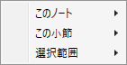
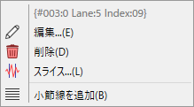
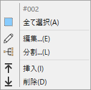
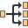
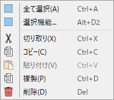

BMSモード
BMSファイル(.bms .bme .bml .pms .pme)を閲覧・編集するためのウィンドウです。
説明
要素をクリックすると説明セクションに飛びます。
要素をクリックすると説明が表示されます。
譜面表示エリア
- 配置されているノートを視覚的に確認・編集するエリアです。
マウスによる操作
-
ホイール: スクロールと拡大率変更に使います。
- Shiftを押している場合は水平方向にスクロールします。
- Ctrlを押している場合は縦スケールを変更します。
- Ctrl+Shiftを押している場合は横スケールを変更します。
-
左クリック: 選択とノートの配置に使います。
- 挙動は編集モードによって異なります。詳細はタブエリアでの説明を参照してください。
-
右クリック: スクロールとコンテキストメニューに使います。
- 右ドラッグによって縦横にスクロールします。
-
右クリックの後、マウスを動かさずにボタンを離すとコンテキストメニューが開きます。
 -
このノート: ノートを右クリックしてメニューを開いた場合に選択可能となる項目です。

- 1行目には、クリックされたノートの詳細が表示されます。
- 指揮者レーン以外のノートを右クリックした場合、そのノートの定義番号が対応する定義リストにて選択されます。
-
 編集: ノート編集ウィンドウを開きます。
編集: ノート編集ウィンドウを開きます。
-
 削除: このノートを削除します。
削除: このノートを削除します。
- スライス: このノートに定義されている音声ファイルを対象として、スライスウィンドウを開きます。
- 小節線を追加: このノートの位置に小節線を追加し、この小節を2つに分割します。
-
この小節: 右クリックした小節に関するメニューです。

- 1行目には、クリックされた小節の番号が表示されます。
- 全て選択: この小節に含まれる全てのノートを選択状態にし、それ以外の選択状態を解除します。
-
編集: 小節長編集ウィンドウを開きます。
- 分割: 小節分割ウィンドウを開きます。
- 挿入: この小節の直前に、長さ1の小節を挿入します。
- 削除: この小節を削除し、以降にある全てのオブジェクトの位置を、この小節の長さぶん手前に移動します。
-
選択範囲: 選択範囲に関するメニューです。

- 全て選択: この譜面に含まれる全てのノートを選択状態にします。
- 選択機能: 選択機能ウィンドウを開きます。
- 切り取り: 選択中のノートをクリップボードにコピーし、譜面から削除します。
- コピー: 選択中のノートをクリップボードにコピーします。
- 貼り付け: クリップボードにコピーされているノーツを譜面に追加します。
- 複製: 選択中のノートをクリップボードにコピーせず、直接その場に追加します。
-
削除: 選択中のノートを譜面から削除します。
情報ペイン
- 編集中のBMSファイルの、ノート配置以外に関する情報を閲覧・編集するエリアです。
-
カテゴリごとにエキスパンダーによってまとめられています。
- エキスパンダーは同時に2つまで展開できます。
- 3つ目のエキスパンダーを展開しようとすると、最初に展開したほうが閉じます。
- タブがあるカテゴリは、タブヘッダーの上でマウスホイール回転によっても表示するタブを切り替えられます。